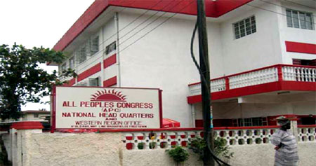
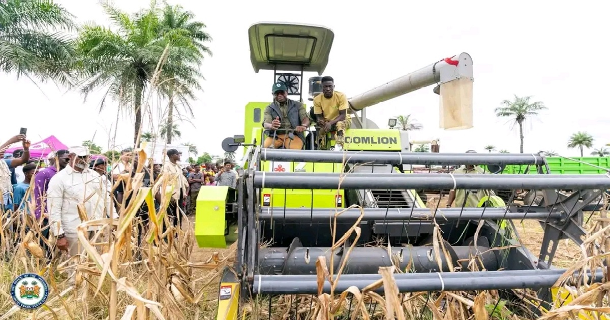
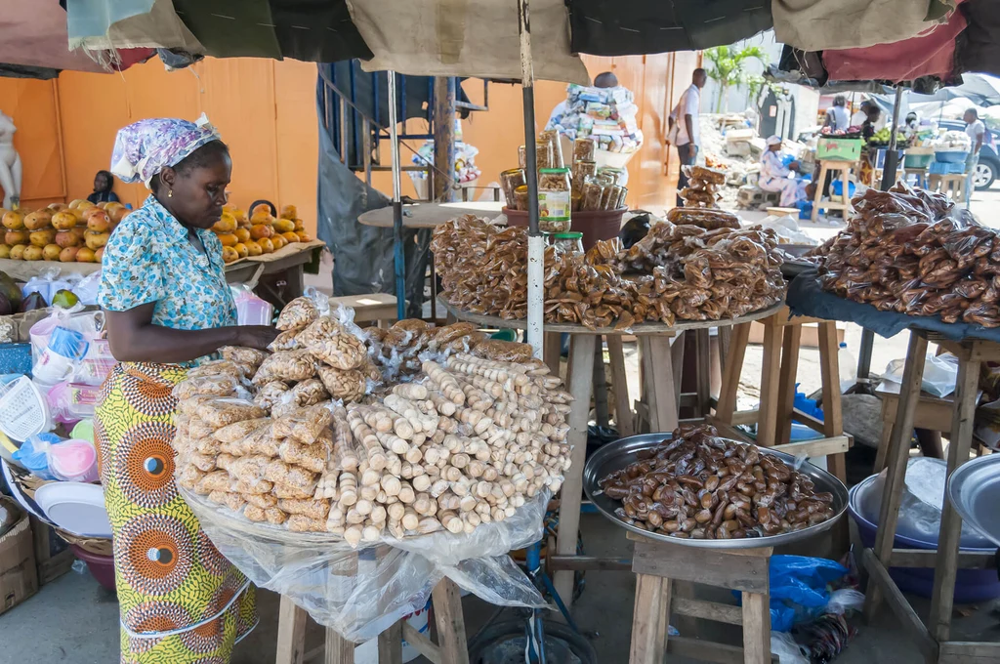

New Political Development in Sierra Leone
Read the lastest Politicall news in Sierra Leone
Read More
Read the lastest news and updates on the curent events in Sierra Leone, especially freetown.
Read more
Read the lastest Politicall news in Sierra Leone
Read More
Read the lastest social news in Sierra Leone
Read MoreSierra Leone News Media is a news website that provides its audience with the lastest news and updates on the current events in Sierra Leone. The website covers a wide range of topics, including politics, social issues, and other important news that affects the country and its citizens. Our goal is to keep our audience informed and engaged with the latest developments in Sierra Leone. From our Daily stories to news about Political and social issues, we strive to provide accutare information to the people of Sierra Leone and Beyound.